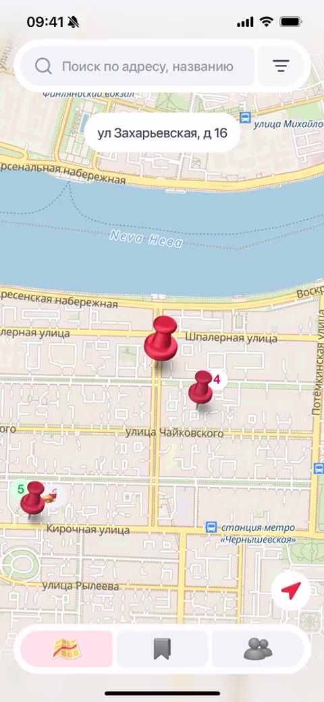
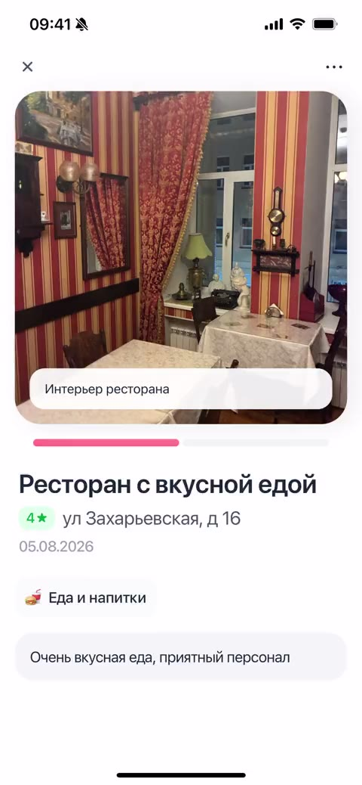
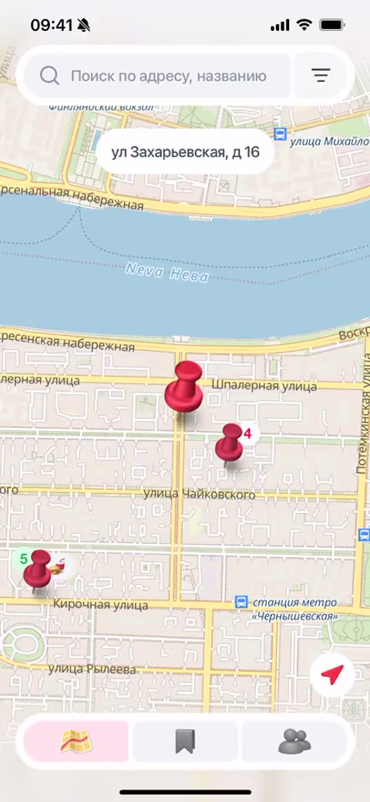
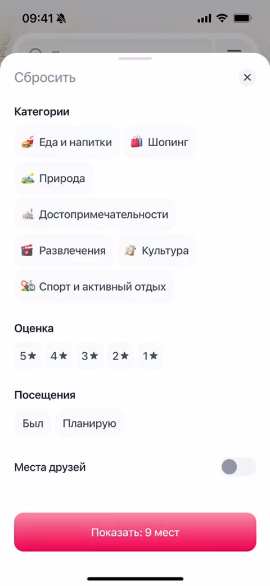
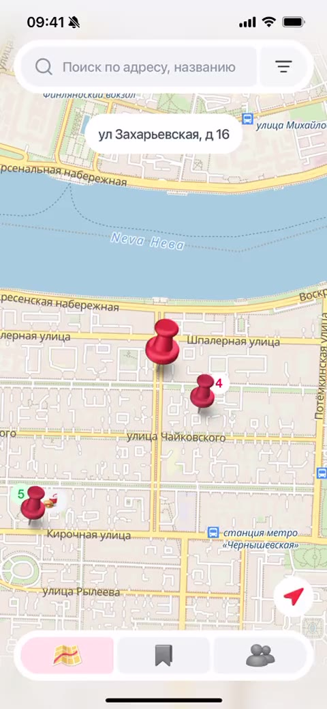
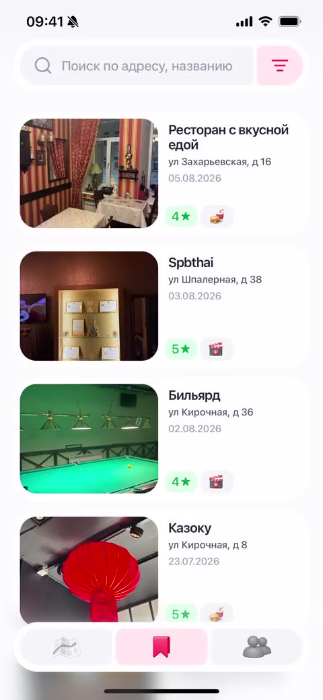
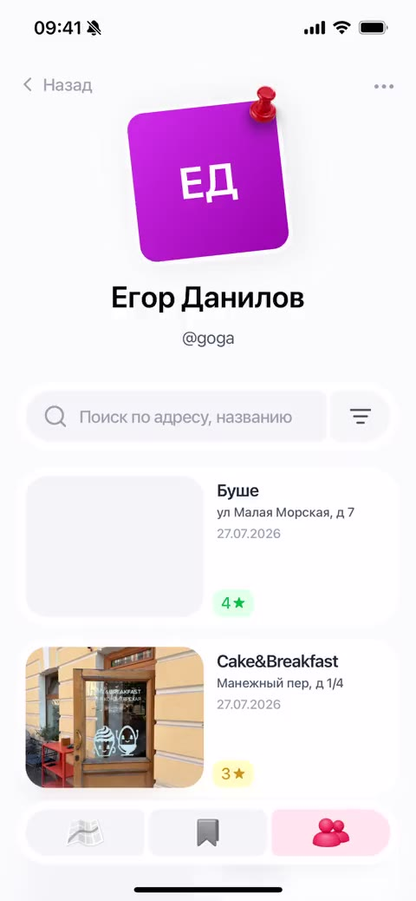

- Переработать онбординг пина — заменить отдельный статичный экран контекстной подсказкой и явно показать следующий шаг
- Интеграция контактной книги — активны только те, кто нашёл друзей в приложении; поиск по номеру снимет барьер
- Геолокационные уведомления — напоминать о местах «Планирую сходить», когда пользователь рядом
- Виджеты быстрого добавления — сохранить место не открывая приложение
Mappy
в проде ↗Часто бывал в разных местах и не хотел терять этот опыт. Собрал сервис — 40% протестировавших возвращаются каждую неделю







Контекст
Привычка сохранять места
Часто бывал в разных местах и хотел не терять этот опыт — фотографировал, писал в заметках, держал в голове. Со временем понял: вспомнить и найти нужное место — та ещё задача.
Идея
Привязать место в памяти к точке на карте
Идея: карточка с фото, оценкой и меткой на карте вместо отдельной заметки — возвращаться к опыту станет проще, чем листать галерею.
Приватность по умолчанию: места видят только друзья, а не любой пользователь, как в паблик-сервисах вроде 2ГИС.
Research
Глубинные интервью и количественные опросы
4 глубинных интервью и опрос на 57 респондентов — как люди сохраняют места сейчас и почему не возвращаются к ним.
Вопрос · 57 ответов
Сколько вам лет?
24–3040.35%
18–2431.58%
30–4019.3%
16–185.26%
Вопрос
Как часто вы бываете в новых местах?
2–3 раза в месяц77.36%
Раз в неделю13.21%
Несколько раз в неделю9.43%
Вопрос
С чем вы чаще сталкиваетесь?
Забываю точное название места61.22%
Теряю сохранённые ссылки/скриншоты53.06%
Не могу найти место по категории34.69%
Трудно делиться подборками12.24%
Вопрос
Какими сервисами пользуетесь, чтобы сохранять места?
Фото или скриншот экрана58.69%
Спрашиваю друзей в мессенджере43.47%
Заметки (Apple Notes, Notion…)36.95%
Закладки в Google/Yandex Maps34.78%
Вопрос
Насколько вы удовлетворены этими решениями?
Средняя оценка
3.63
1
0%
2
13%
3
32.6%
4
32.6%
5
21.7%
Вопрос
А что в них вас не устраивает?
Трудно сортировать и искать66.66%
Нет напоминаний, когда я рядом33.33%
Не вижу место на карте22.22%
Нельзя добавить заметки/фото11.11%
Вопрос
Как часто вы возвращаетесь к сохранённому списку?
Реже раза в месяц65.91%
Раз в неделю27.27%
Несколько раз в неделю6.82%
Аудитория
Две основные когорты пользователей
Исследователь пробует новые места и ведёт архив для себя — сейчас криво, скриншотами и заметками. Социальному важен не архив, а обмен: спросить рекомендацию, поделиться своей.
Исследователь
Социальный
Проблема
Люди забывают места и теряют информацию о них
Информация о местах разрознена — фото, заметки, «Сохранённое» в разных приложениях. Чтобы вспомнить или найти что-то новое, приходится искать в интернете и ждать ответа от друзей.
Цель
Сделать сохранение мест привычкой, а не разовым действием
До Mappy 66% сохраняли места, но возвращались к списку реже раза в месяц — по сути теряли то, что сохранили.
Целевой показатель — WAU: сохраняют ≥1 места в неделю или возвращаются к уже сохранённым. Открывают приложение не только для сохранения — продукт работает.
Гипотезы
Три гипотезы под текущий этап: рост, удержание, привычка
H1
Если незарегистрированный пользователь видит место по ссылке от друга, он регистрируется — ценность понятна до входа в продукт.
H2
Если в приложении есть места от знакомых, ты открываешь его при выборе куда пойти — вместо Google Maps или мессенджера.
H3
Если сохранение места занимает меньше 10 секунд, пользователь делает это регулярно — а не откладывает на потом.
Тестирование
Коридорное тестирование в формате интервью с задачами
Провёл две итерации тестирования: добавить место где был, добавить место куда планирую, найти по оценке.
Черновые варианты собирал в Figma Make — ускорило проработку сценариев перед финальной версткой.
Итерация 1
Название и адрес были неудобно расположены — непонятно, как менять. Никто не добавил больше четырёх фото; пользователи попросили подпись к фото.


Итерация 2
Адрес и название стали унифицированными полями. Лимит фото — четыре, добавил подпись к каждому.
Карта
Ключевые сценарии на карте
Короткие демо: работа с картой, фильтрами и поиском.
Было пин без адреса.Стало пилюля с адресом сверху.
Было пины плотно разбросаны, тяжело попасть в нужный.Стало при масштабировании пины объединяются, добавлен слайдер выбора.
Было искал только среди сохранённого.Стало ищет любой адрес.
Другие экраны
Сохранённые места и друзья
Сохраняй места, находи друзей и смотри их рекомендации в одном приложении.
Было карточки без быстрой редакции.Стало добавил быстрые действия.Планы функция неявная — на первых заходах подскажем лёгким покачиванием карточки.
Было входящие и исходящие запросы вперемешку.Стало отдельный центр уведомлений — задел под push.
Было поиск уезжал наверх вместе с именем — мешал фильтрации.Стало поиск поднимается и фиксируется отдельно от карточки.
Дизайн-система
База для цельного и масштабируемого интерфейса
Иконки для категорий мест сгенерировал через Nano Banana прямо в Figma — быстрее, чем искать и адаптировать готовый набор под стиль продукта.

Что планировали — что получилось
5 решений, от которых пришлось отказаться по пути
Виджет на блокировке → автоопределение по фото
У PWA нет доступа к API виджетов. Форма вместо этого читает геометку из фото и сама подставляет адрес.
Вход по телефону → email
Все три канала подтверждения номера уперлись в стену — юрлицо, блокировка хостинга. Перешёл на email, друзья теперь ищутся по нику.
Мгновенная дружба → запросы с подтверждением
«Заявку» заменили на «запрос» по фидбеку с тестов. В планах — публичный/приватный статус аккаунта.
Лента уведомлений — задел под будущие пуши
Сейчас это обычный опрос сервера для запросов в друзья, но структура уже готова под push-уведомления о релизах.
Дата рождения → галочка «Мне есть 18»
Отклонил три макета с датой рождения — возраст не нужен ни одной функции, а без верификации дата избыточна.
Результаты
Продукт в продакшне, активное ядро пользователей подтвердилось
Провели два раунда тестирования. После второго — скорректировали навигацию и логику карточки места.
20
участников в тесте
7–8
активных каждую неделю
2
раунда тестирования
Что узнал
Людям важнее контекст, чем точность
В процессе понял: люди редко запоминают точные имена и адреса — зато хорошо запоминают контекст. Если напомнить не «помнишь Никиту, которого видели полгода назад», а «помнишь того парня со скейт-парка» — вспомнить получится с куда большей вероятностью.
Планы
Продукт в продакшне, работаем над удержанием